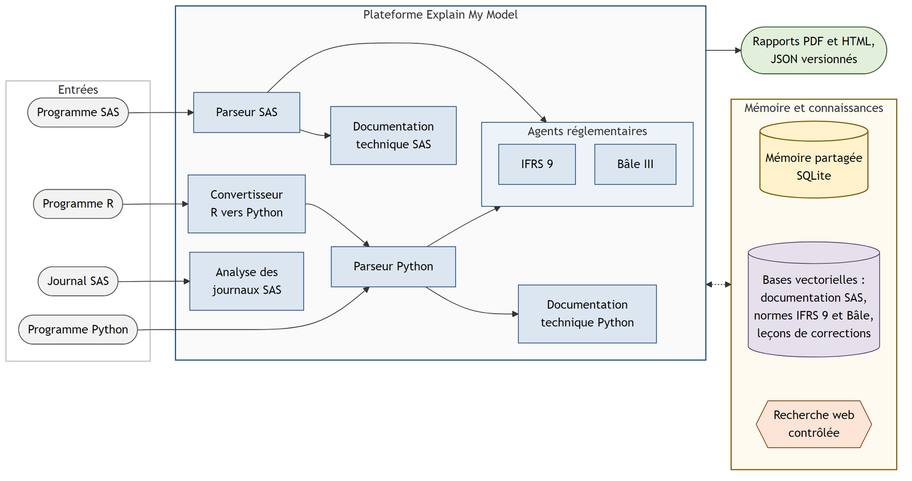
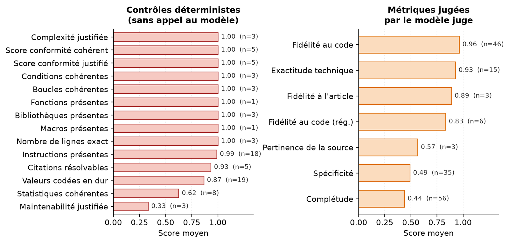

Le sujet
Une banque doit documenter chacun de ses modèles de risque de crédit pour ses auditeurs et son régulateur. IFRS 9 encadre le calcul des pertes de crédit attendues ; Bâle III fixe les fonds propres que la banque doit détenir. La documentation doit permettre à une personne extérieure de comprendre le modèle, ses hypothèses et ses limites.
Aujourd'hui, un consultant relit à la main des programmes de milliers de lignes, souvent anciens, peu commentés, écrits en SAS, Python ou R, parfois sur des solutions propriétaires sans documentation publique. C'est long, coûteux, et la documentation se désynchronise du code.
La question du PFE : dans quelle mesure l'IA générative peut-elle produire, à partir du seul code source, une documentation technique et réglementaire utilisable sous le contrôle du régulateur ? Le principe retenu : la documentation doit décrire ce que fait le code, pas ce que ses auteurs pensent qu'il fait.
Avant de coder, j'ai fixé cinq critères de succès chiffrés (couverture du code, fidélité, reproductibilité, effet de la revue, conversions validées) ; ils sont confrontés aux résultats plus bas.
Architecture
- Analyse du codeParseurs SAS et Python (arbre syntaxique et LLM) : blocs, variables, flux de données
- Recherche de sourcesRAG sur IFRS 9, Bâle et la documentation SAS, puis le web, sinon déduction signalée
- Agents de rédactionDocumentation technique, IFRS 9, Bâle III, journaux SAS
- VérificationContrôles déterministes et LLM juge (DeepEval), score par section
- Revue experteCorrections versionnées, puis transformées en leçons réutilisées

Schéma simplifié, dessiné par moi.
Ce que j'ai construit
- Huit agents spécialisés orchestrés avec LangGraph : parseurs SAS et Python, documentation technique SAS et Python, analyse des journaux d'exécution SAS, agents réglementaires IFRS 9 et Bâle III, et un convertisseur R vers Python qui exécute le code converti dans un bac à sable et corrige ses erreurs jusqu'à ce qu'il tourne.
- Une « cascade de connaissances » : chaque explication cite sa source (norme, documentation, web) ou déclare qu'elle est déduite du code, avec un niveau de confiance. Le système préfère se taire plutôt qu'inventer.
- Un RAG réglementaire testé, pas choisi par réputation : l'encodeur MiniLM confondait « PD à 12 mois » et « PD à vie » ; je l'ai remplacé par BGE-M3, qui fait la distinction, avec un index FAISS reconstruit.
- Un routage des modèles de langage sous contrainte de quota : sans accès payant, chaque tâche est confiée au modèle gratuit le plus adapté (Llama 3.3 70B pour le raisonnement, Llama 4 Scout pour les textes longs, GPT-OSS 120B comme juge critique), à température nulle.
- Une évaluation à deux familles : ce qui se vérifie (une valeur existe-t-elle dans le code ? un article cité existe-t-il ?) est contrôlé en Python sans LLM ; ce qui s'interprète (fidélité, complétude, citation exacte) est noté par un LLM juge indépendant du générateur. Les sections incertaines comptent double dans le score.
- Une revue humaine qui fait apprendre le système : chaque correction crée une version ; à l'approbation, les corrections généralisables deviennent des leçons, retrouvées par recherche sémantique pour les rapports suivants, sans réentraîner aucun modèle.
- Une application web Flask pour les équipes : projets, import des programmes, dialogue avec les agents, rapports PDF, rôles séparés (technique, réglementaire), double authentification, et une validation par un modèle tiers avec la clé de l'utilisateur, jamais stockée.
Résultats
Mesures tirées de la base de l'application, sur des exécutions réelles : 20 programmes SAS, Python et R, 31 rapports PDF, 244 mesures d'évaluation, 7 rapports passés en revue (15 versions).
- Fidélité au code (46 évaluations)
- 0,96
- Exactitude technique (15)
- 0,93
- Instructions citées retrouvées dans le code
- 99 %
- Complétude (56)
- 0,44
| Critère fixé au départ | Résultat mesuré | Verdict |
|---|---|---|
| Couverture du code supérieure à 90 % | 100 % des 421 lignes significatives de 4 programmes | Atteint |
| Fidélité au code élevée et stable | 0,96 sur 46 évaluations | Atteint |
| Reproductibilité stricte | Oui pour les contrôles déterministes ; les textes générés varient | Partiel |
| Amélioration après revue experte | 0,75 → 0,83 sur les sections corrigées (un cycle) | Atteint |
| Conversions validées par exécution | 3 sur 3, en 2 à 4 tentatives | Atteint |

Lecture : la documentation est fidèle mais incomplète. Elle n'invente presque rien (fidélité 0,96, 99 % des instructions citées existent), mais elle omet des éléments (complétude 0,44, spécificité 0,49) : c'est la conséquence voulue de consignes qui préfèrent le silence à une affirmation non fondée.
Limites
Pas un document prêt pour l'audit. La documentation réglementaire relie le code à la norme ; elle ne juge pas la justesse du modèle ni son calibrage. Les tests exigés par le régulateur (défauts prédits contre défauts observés) étaient impossibles sans données clients. Un expert reste indispensable, et la plateforme laisse chaque rapport « en attente » tant qu'il ne l'a pas approuvé.
Une solution propriétaire sans documentation publique. Sur 20 blocs d'un rapport technique, 9 ont été documentés par déduction à partir du code ; le rapport le signale au lecteur.
Reproductibilité partielle et juge automatique. Les textes générés varient d'une exécution à l'autre, et la justesse de fond reste notée par un LLM, avec ses biais connus.
Offres gratuites uniquement. Les quotas ont limité la qualité atteignable : 17 des 32 validations par un modèle tiers ont échoué faute de quota. Les résultats reposent sur un seul cycle de revue et trois conversions.
Confidentialité
Ce travail a été réalisé pour une entreprise. Le code et les données restent confidentiels : cette page présente la démarche, les résultats validés et des graphiques tirés de mon rapport de stage, sans aucune capture d'écran des outils.